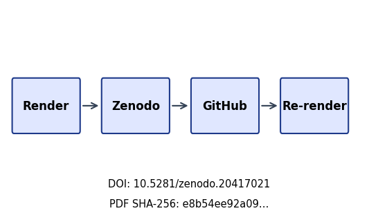
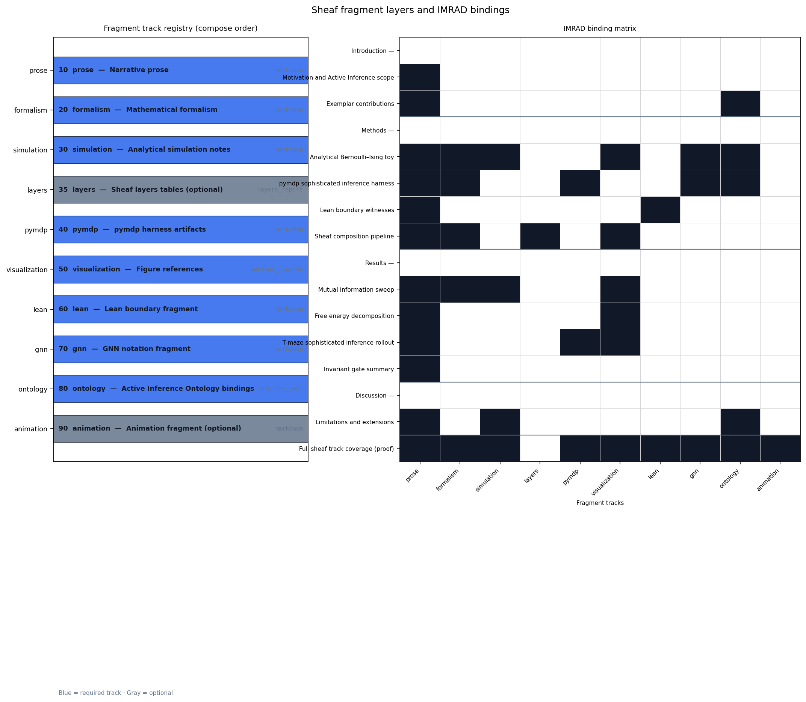
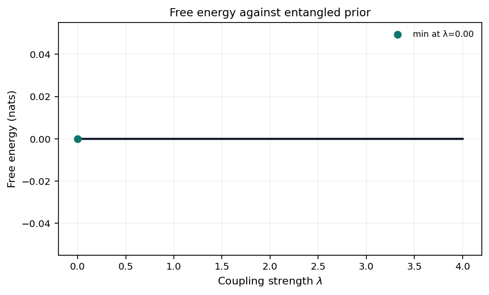
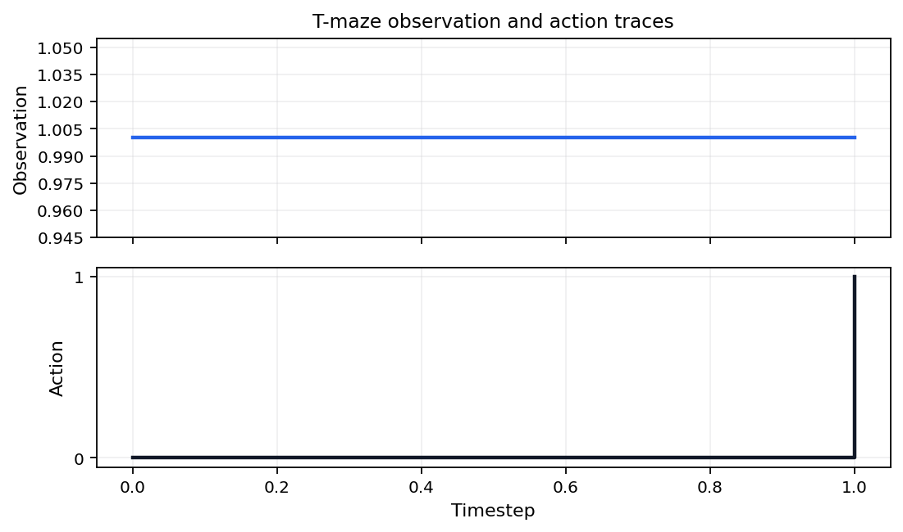

State: unpublished / pending pairing
e8b54ee92a09e8f23ebecae00b0057a2b6d37318f050d5326a40b8af0c999574887a6f4f526c90c85d51db57d8205e8c9358e1a6352a58620db1c16842628ca7c028c3a16b4b05eb831b6eec1de47f98b5dcf8a21573552f270c28764fda9f26Pairing: pending — unresolved: - ✗ GitHub release
URL: pending
title=Active Inference Multi-Track Exemplar
version=0.2.0 doi=10.5281/zenodo.20417021
sha256=e8b54ee92a09e8f2… manifest={"t":"Active Inference Multi-T","v":"0.2.0","d":"10.5281/zenodo.20417021","s":"e8b54ee92a09e8f2"}Structured manifest:
../data/transmission_manifest.json

Stego: off | overlays text | barcodes on | XMP on |
manifest on → ./secure_run.sh
This page summarizes which sheaf fragment tracks are
bound for each IMRAD row in manuscript/sheaf/manifest.yaml.
The matrix is regenerated at compose time.
Totals: 42 present / 42 bound / 0 missing (gray).
| Color | Meaning |
|---|---|
| Black | Track present (bound and fragment exists) |
| White | Absent (not bound for this row) |
| Gray | Missing (bound but fragment file absent) |
Introduction (group)
Motivation and Active Inference scope
Exemplar contributions ## Methods
Methods (group)
Analytical Bernoulli–Ising toy
pymdp sophisticated inference harness
Lean boundary witnesses
Sheaf composition pipeline ## Results
Results (group)
Mutual information sweep
Free energy decomposition
T-maze sophisticated inference rollout
Invariant gate summary ## Discussion
Discussion (group)
Limitations and extensions ## Appendix
Full sheaf track coverage (proof)
Coverage overview. Sheaf track coverage matrix: 16 IMRAD rows × 10 fragment columns. Black = present (P), white = absent (—), gray = missing (M). Counts: 42 present / 42 bound / 0 missing.
Appendix row 16_appendix_full_sheaf.md binds 9 fragment
track types as a composability proof (registry defines 10 types;
optional layers is methods-only).
This public exemplar binds 7 pipeline tracks — Lean,
analytical Python, pymdp sophisticated inference, GNN, ontology
concordance, visualizations, and the sheaf manuscript composer —
declared in tracks.yaml. Flat
manuscript sections follow an IMRAD outline
(Introduction, Methods, Results, Discussion, plus appendix) assembled
from 10 sheaf fragment types registered in manuscript/sheaf/tracks.yaml.
The first page (00_00_sheaf_coverage.md)
shows a 16-row coverage matrix (4 IMRAD group headers
and 12 composed subsections, including a full-track appendix proof)
regenerated from the live manifest at compose time.
The T-maze demo aligns with pymdp sophisticated_inference examples.
Measured invariant checks: 12 / 12 passed. SI planning horizon: 2 steps.
This public exemplar demonstrates a sheaf-composed Active Inference manuscript: flat sections bind optional fragment tracks (prose, formalism, simulation, pymdp, visualization, Lean, GNN, ontology) under an IMRAD outline. The first page heatmap summarizes which tracks are bound per section.
The pymdp track follows the pymdp
sophisticated_inference examples with a minimal T-maze and planning
horizon policy_len = 2.
This exemplar contributes:
tracks.yaml) —
analytical Python, pymdp, GNN, ontology, Lean, visualizations, and sheaf
composition — each with artifact gates.manuscript/sheaf/tracks.yaml (including optional
layers and animation).expected_free_energy →
ExpectedFreeEnergylocation → HiddenStateobservation →
ObservationLikelihoodpolicy → PolicyPosteriorWe study a minimal K=2 Bernoulli / Ising coupling as the analytical companion to multi-track verification. Closed-form mutual information \(I(\lambda)\) provides an oracle for empirical checks and GNN round-trips.
Measured sweep grid points: 21. Invariants passed: 12 / 12.
The entangled joint over binary policies satisfies
\[q_\lambda(\pi) \propto E(\pi)\,\exp(\lambda J(\pi)),\]
with symmetric Ising coupling \(J\) and deformation parameter \(\lambda\). Mutual information is \(I(\lambda)=\log 2 - H_b(\sigma(\lambda))\).
The analytical track writes
output/data/parameter_sweep.csv comparing closed-form and
empirical mutual information across \(\lambda
\in [0, 4]\).

Figure 1 (methods). Closed-form and Monte Carlo mutual information I(λ) for the symmetric Bernoulli-Ising toy across 21 grid points up to λ_max = 4; grid maximum 0.6031 nats on the measured sweep.
The Bernoulli toy is also declared in
gnn/bernoulli_toy.gnn.md (GNN v1.1). Ontology annotations
bind framework symbols to Active Inference Ontology terms.
J → CrossStreamCouplingPotentialgamma → SophisticationWeightlam →
EntanglementDeformationParameterpi1 → Stream1PolicyVectorpi2 → Stream2PolicyVectorq_joint → EntangledJointPosteriorSophisticated inference (planning horizon). This
section documents a real pymdp state-inference harness
on a minimal T-maze with planning horizon policy_len = 2.
Default mode is state_inference (T-maze rollout via
simulate_si_tmaze.py). The Agent constructs a multi-step
policy set (num_policies logged in artifacts); per-step
belief entropy is recorded in
output/logs/pymdp_runs.jsonl and aggregated as
mean_belief_entropy.
Graph-world infer_policies is an opt-in extension stub —
see tracks.yaml extension_tracks.graph_world
and scripts/simulate_si_graph_world.py. Reference
notebooks: pymdp
sophisticated_inference.
Mean belief entropy across steps: 0.3251.
Given generative matrices \(A,B,C,D\), pymdp computes state beliefs
\(q(s)\) via variational inference
(infer_states). The Agent is configured with planning
horizon \(H =\) 2, which defines the
policy depth used when constructing candidate policies
(logged as num_policies in
output/data/si_tmaze_summary.json).
This exemplar records belief entropy per step; extending to full
expected-free-energy policy selection (infer_policies) is
documented as a follow-on track.
Artifact paths:
output/logs/pymdp_runs.jsonl — append-only JSONL run
logoutput/data/si_tmaze_summary.json — step count,
actions, mean belief entropyoutput/data/si_tmaze_trace.json — rollout traceSteps recorded: 2.
See gnn/si_tmaze.gnn.md for a GNN view of the T-maze
hidden state, observation, and policy variables with ontology
bindings.
belief_entropy → BeliefEntropyloc → HiddenStateobs → ObservationLikelihoodpi → PolicyPosteriorThe Lean track provides minimal boundary witnesses checked by
lake build under
lean/TemplateActiveInference/. Fragments cite theorem names
without duplicating proof scripts in prose.
See the Lean fragment for module references aligned with the analytical toy.
Lean module
TemplateActiveInference.SophisticatedInference declares the
planning horizon parameter and a witness that horizon \(> 1\) distinguishes sophisticated from
myopic inference.
Build via lake build under lean/.
Sheaf composition glues registered fragment tracks into flat
manuscript sections using manuscript/sheaf/manifest.yaml
and manuscript/sheaf/tracks.yaml.
The layers overview figure (registry caption in
figures.yaml section_figures.methods_sheaf)
summarizes the 10 fragment layer types and their IMRAD bindings in one
panel (registry stack plus binding heatmap). The tables below list every
track definition and section×track binding from the live manifest at
compose time.
uv run python scripts/compose_manuscript.py
uv run python scripts/compose_manuscript.py --validate-only --strictEach compose run emits
output/data/sheaf_coverage_matrix.json and regenerates
coverage artifacts. Partial compose (--section) is
draft-only; the matrix always reflects the full manifest.
Coverage semantics: black / P = present (bound and
file exists); white / — = absent (not bound);
gray / M = missing (bound but file absent). Discussion
limitations reference the same matrix counts (42 /
42 / 0).
Each fragment track \(t \in
\mathcal{T}\) maps to renderer \(R(t)\) and compose-order index \(\pi(t)\) from
manuscript/sheaf/tracks.yaml. For manifest row \(s\), cell \(B(s,t) \in \{\mathrm{P}, \mathrm{—},
\mathrm{M}\}\) follows the coverage matrix regenerated at compose
time (42 present / 42 bound / 0 missing).
Registry size: \(|\mathcal{T}| = 10\) types across 16 IMRAD manifest rows. Formal track definitions and section×track bindings appear in the generated tables below.

Figure 6 (methods). Sheaf layers overview: registry stack (compose order, renderer ids) and IMRAD binding heatmap for 10 fragment types across 16 manifest rows (42 present / 42 bound / 0 missing).
Compose order and renderer bindings from
manuscript/sheaf/tracks.yaml.
| Order | Track id | Label | Renderer | Optional |
|---|---|---|---|---|
| 10 | prose |
Narrative prose | markdown |
No |
| 20 | formalism |
Mathematical formalism | markdown |
No |
| 30 | simulation |
Analytical simulation notes | markdown |
No |
| 35 | layers |
Sheaf layers tables | layers_report |
Yes |
| 40 | pymdp |
pymdp harness artifacts | markdown |
No |
| 50 | visualization |
Figure references | section_figures |
No |
| 60 | lean |
Lean boundary fragment | markdown |
No |
| 70 | gnn |
GNN notation fragment | markdown |
No |
| 80 | ontology |
Active Inference Ontology bindings | ontology_yaml |
No |
| 90 | animation |
Animation fragment | markdown |
Yes |
Track count: 10 registered fragment types.
Section rows versus fragment track columns. P = present (bound and file exists); — = absent (not bound); M = missing (bound, file absent).
| Section | prose | formalism | simulation | layers | pymdp | visualization | lean | gnn | ontology | animation |
|---|---|---|---|---|---|---|---|---|---|---|
| Introduction (group) | — | — | — | — | — | — | — | — | — | — |
| Motivation and Active Inference scope | P | — | — | — | — | — | — | — | — | — |
| Exemplar contributions | P | — | — | — | — | — | — | — | P | — |
| Methods (group) | — | — | — | — | — | — | — | — | — | — |
| Analytical Bernoulli–Ising toy | P | P | P | — | — | P | — | P | P | — |
| pymdp sophisticated inference harness | P | P | — | — | P | — | — | P | P | — |
| Lean boundary witnesses | P | — | — | — | — | — | P | — | — | — |
| Sheaf composition pipeline | P | P | — | P | — | P | — | — | — | — |
| Results (group) | — | — | — | — | — | — | — | — | — | — |
| Mutual information sweep | P | P | P | — | — | P | — | — | — | — |
| Free energy decomposition | P | — | — | — | — | P | — | — | — | — |
| T-maze sophisticated inference rollout | P | — | — | — | P | P | — | — | — | — |
| Invariant gate summary | P | — | — | — | — | — | — | — | — | — |
| Discussion (group) | — | — | — | — | — | — | — | — | — | — |
| Limitations and extensions | P | — | P | — | — | — | — | — | P | — |
| Full sheaf track coverage (proof) | P | P | P | — | P | P | P | P | P | P |
Totals: 42 present / 42 bound / 0 missing.
| Symbol | Coverage color | Meaning |
|---|---|---|
| P | Black | Track present (bound and fragment exists) |
| — | White | Absent (not bound for this section) |
| M | Gray | Missing (bound but fragment file absent) |
We sweep coupling strength \(\lambda\) on a grid of 21 points up to \(\lambda_{\max} = 4\). Closed-form mutual information \(I(\lambda)\) is compared to Monte Carlo estimates from the analytical module.
Measured invariant checks: 12 / 12 passed on the clean tree.
The entangled joint over binary policies satisfies
\[q_\lambda(\pi) \propto E(\pi)\,\exp(\lambda J(\pi)),\]
with symmetric Ising coupling \(J\) and deformation parameter \(\lambda\). Mutual information is \(I(\lambda)=\log 2 - H_b(\sigma(\lambda))\).
Empirical MI estimates use fixed seed 0 and share the same \(\lambda\) grid as the closed-form sweep in
output/data/parameter_sweep.csv.
Figure 2 (results). Closed-form and Monte Carlo mutual information I(λ) for the symmetric Bernoulli-Ising toy across 21 grid points up to λ_max = 4; grid maximum 0.6031 nats on the measured sweep.
Free energy against the entangled prior is evaluated along the same \(\lambda\) grid used for the MI sweep. The curve highlights how deformation strength trades off prior alignment and coupling energy in the analytical toy.
Saturation MI (grid maximum on the measured λ sweep): 0.6031 nats.

Figure 3 (results). Free energy of the entangled posterior relative to the mean-field prior across the hyperparameter sweep (grid points 21).
The pymdp harness rolls out a T-maze sophisticated-inference agent
with planning horizon 2. Summary metrics land in
output/data/si_tmaze_summary.json.
Steps recorded: 2. Mean belief entropy: 0.3251.
Rollout trace: output/data/si_tmaze_trace.json. JSONL
run log: output/logs/pymdp_runs.jsonl.

Figure 3a (results). Belief entropy over time for the T-maze rollout (mean 0.3251 nats).

Figure 3b (results). Observation and action traces for the T-maze rollout (action diversity 2).

Figure 3c (results). Discrete action index over time for the pymdp T-maze rollout (policy length 2).
The analytical invariant registry (src/invariants.py)
runs before PDF rendering. On a clean checkout 12 / 12
analytical checks pass in the merged report at
output/reports/invariants.json, which also records
simulation invariants when the pymdp harness ran.
Per-domain SI checks live in
output/reports/si_invariants.json before merge. Failures
block publication artifacts.
Limitations. The Bernoulli–Ising toy and T-maze
harness are pedagogical — they validate pipeline wiring, not empirical
claims about biological agents. Default pymdp mode is
state_inference with planning horizon 2; full policy
inference remains an opt-in extension.
Sheaf audit. The coverage heatmap and appendix 9-track proof make binding state auditable: 42 present / 42 bound / 0 missing cells across 16 manifest rows. Strict compose validation fails on gray cells so downstream PDF rendering inherits an honest matrix.
Extensions. Opt-in pipeline extensions in
tracks.yaml extension_tracks (belief GIF via
render_animation.py, graph-world SI stub) add artifacts
outside the default analysis DAG. The default IMRAD manifest already
binds an animation sheaf fragment on the
appendix row; extension scripts are for richer media, not extra manifest
rows. Promote a private project by copying the sheaf manifest pattern
under manuscript/sections/imrad/.
Measured pymdp rollout (state_inference, config hash
ea4b126a9c22f22f): mean belief entropy 0.3251 nats over 2
steps; goal reached flag 1; action diversity 2.
Analytical sweep residual RMSE 0 nats (max residual 0). Coverage audit: 42 present / 42 bound / 0 missing cells on the IMRAD matrix.
coverage_semantics → Coverage matrix
semanticspedagogical_scope → Pedagogical
scopestate_inference_mode → State inference
harnessThis section is the composability proof: all 9
appendix-bound fragment tracks are rendered in one flat manuscript
section. The registry defines 10 composable types; optional
layers is methods-only and excluded from this row. The
animation fragment is bound here (optional type in the
registry) alongside prose, formalism, simulation, pymdp, visualization,
lean, gnn, and ontology tracks.
For each track \(t \in
\mathcal{T}_{\mathrm{Full}}\), the manifest binds a fragment path
\(f(t)\) and the composer emits
<!-- sheaf-track:t --> before the rendered body.
\[ |\mathcal{T}_{\mathrm{Full}}| = 9 \]
The fragment registry defines 10 composable track types; optional
layers is bound on the methods sheaf section only. Optional
animation is bound in this appendix proof; the opt-in GIF
extension in tracks.yaml extension_tracks is
separate from this fragment slot.
Analytical artifacts: output/data/parameter_sweep.csv
and output/reports/invariants.json from the Bernoulli/Ising
sweep track.
pymdp harness summary: output/data/si_tmaze_summary.json
(mean belief entropy, action trace). Full log:
output/logs/pymdp_runs.jsonl.
Figure A1 (appendix). Closed-form and Monte Carlo mutual information I(λ) for the symmetric Bernoulli-Ising toy across 21 grid points up to λ_max = 4; grid maximum 0.6031 nats on the measured sweep.
Figure A2 (appendix). Discrete action index over time for the pymdp T-maze rollout (policy length 2).
Figure 4. Sheaf track coverage matrix: 16 IMRAD rows × 10 fragment columns. Black = present (P), white = absent (—), gray = missing (M). Counts: 42 present / 42 bound / 0 missing.
Lean modules under lean/TemplateActiveInference/ declare
horizon and coupling witnesses. Build with lake build in
lean/; some lemmas remain sorry by design in
this exemplar.
GNN declarations: gnn/bernoulli_toy.gnn.md and
gnn/si_tmaze.gnn.md. Ontology concordance is validated
against Active Inference Ontology bindings.
belief_entropy → BeliefEntropyexpected_free_energy →
ExpectedFreeEnergylocation → HiddenStateobservation →
ObservationLikelihoodpolicy → PolicyPosteriorsheaf_track → SheafFragmentAnimation sheaf fragment (bound in this appendix row): documents the optional registry track and points at static SI figure output.
Static frame artifact: ../figures/si_tmaze_actions.png
(from the default SI figure pipeline).
Opt-in extension GIF: run
scripts/render_animation.py to write
../figures/si_belief_trajectory.gif (placeholder loop from
the belief-entropy curve until a true frame sequence lands under
../figures/animation/).
This exemplar shows how pipeline tracks, sheaf fragment registries, and IMRAD manuscript sections fit together: analytical oracles and pymdp rollouts produce measured artifacts; composition binds 12 flat sections from 10 fragment tracks; coverage JSON and the first-page heatmap report 42 present / 42 bound / 0 missing cells.
Strict validation
(compose_manuscript.py --validate-only --strict) fails on
gray matrix cells, keeping the appendix full-track proof and Results
sections trustworthy for downstream PDF rendering. The T-maze harness
runs in state_inference mode with config hash
ea4b126a9c22f22f; sweep RMSE 0 nats bounds
analytical–empirical agreement on the toy.
See manuscript/references.bib for bibliography entries
cited in the composed sections.
Release: v0.2.0 · DOI
10.5281/zenodo.20417021 · SHA-256
e8b54ee92a09… · pairing pending
Prior: No prior releases.